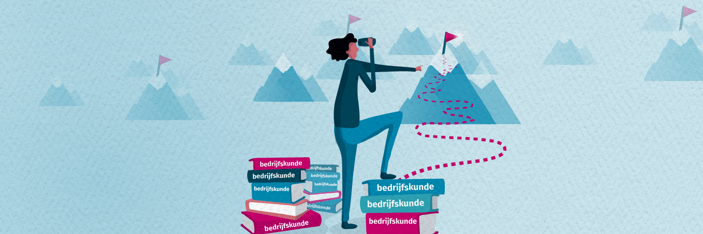
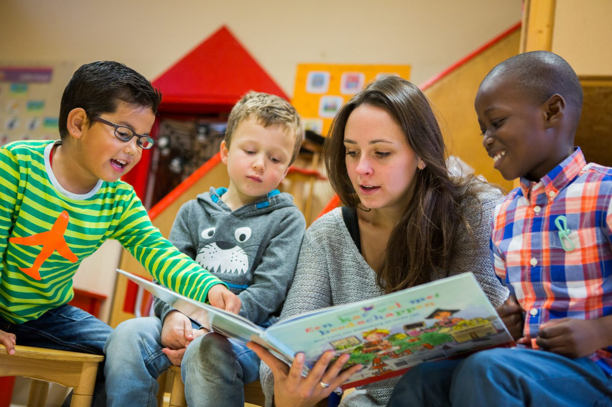
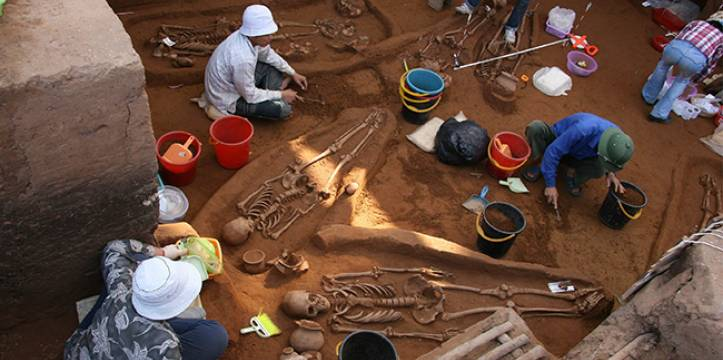

Een opleiding in de exacte wetenschappen ligt voor de hand wanneer je het profiel Natuur en Techniek kiest. Veel leerlingen kiezen een studie waar je soortgelijke vakken krijgt of met technische onderwerpen aan de slag gaat. Veel gekozen opleidingen zijn:
Dit zijn maar een paar bacheloropleidingen voor profiel Natuur en Techniek.
Met jouw technisch inzicht en praktische aanpak weet jij wel
raad met complexe situaties bij deze opleidingen.
Het profiel Natuur en Techniek
(havo of vwo) is daarom ook een goede basis voor een groot aantal opleidingen
die minder exact van aard zijn.
Op de middelbare school stonden vakken als biologie en scheikunde centraal in jouw agenda. Deze leerlingen kozen dan vaak het profiel Natuur en Gezondheid. Veel leerlingen kiezen daarom voor een vervolgopleiding waarin je veel soortgelijke vakken krijgt, bijvoorbeeld:
Werken in een lab
Alle bacheloropleidingen voor profiel Natuur en Gezondheid Je hebt ervaring opgedaan met complexe onderwerpen, zoals het begrijpen van het menselijk lichaam. Het profiel Natuur en Gezondheid (havo of vwo) biedt je daarom een goede basis voor een groot aantal opleidingen die niet direct met zorg of chemie te maken hebben. Met een havo- of vwo-diploma met het profiel N&G voldoe je onder aan ook aan de toelatingseisen van onderstaande bacheloropleidingen.

PABO-opleiding
Op de middelbare school stonden vakken als economie en geschiedenis centraal in jouw agenda. Deze leerlingen kozen dan vaak het profiel Economie en Maatschappij. Het profiel Economie en Maatschappij is één van de vier profielen waaruit je kunt kiezen als je HAVO of VWO doet. Veel leerlingen kiezen daarom voor een vervolgopleiding waarin je veel soortgelijke vakken krijgt, bijvoorbeeld:
Werken in de Economie
Alle bacheloropleidingen voor profiel Economie en Maatschappij Je hebt ervaring opgedaan met complexe onderwerpen, zoals het begrijpen van het starten van een bedrijf. Ook leer omgaan met heel veel geld en hoe je het moet uitgeven. Het profiel Economie en Maatschappij (havo of vwo) biedt je daarom een goede basis voor een groot aantal opleidingen die niet direct met zorg of chemie te maken hebben. Met een havo- of vwo-diploma met het profiel E&M voldoe je onder aan ook aan de toelatingseisen van onderstaande bacheloropleidingen.

Archeologie
Op de middelbare school wordt het profiel Cultuur en Maatschappij gezien als pretpakket en een pakket waarvoor je bijna niks hoeft te doen. maar met het profiel kan je heel veel leuke studies. Heel veel. Leerlingen met het profiel Cultuur en Maatschappij kunnen dus verschillende kanten op. Dit brede profiel is gericht op talen, culturen, communicatie, muziek, kunst en maatschappelijke onderwerpen als rechten, politiek, onderwijs, filosofie, geschiedenis of hulpverlening. Het profiel Cultuur en Maatschappij is één van de vier profielen waaruit je kunt kiezen als je HAVO of VWO doet. Veel leerlingen kiezen daarom voor een vervolgopleiding waarin je veel soortgelijke vakken krijgt, bijvoorbeeld:
Religiewetenschappen(Uitlegvideo van Sjoerd)
Alle bacheloropleidingen voor profiel Cultuur en Maatschappij Ook leer omgaan met mensen en verschillende soorten mensen. Het profiel Cultuur en Maatschappij (havo of vwo) biedt je daarom een goede basis voor een groot aantal opleidingen die niet direct met zorg of chemie te maken hebben. Met een havo- of vwo-diploma met het profiel C&M voldoe je onder aan ook aan de toelatingseisen van onderstaande bacheloropleidingen.
Journalistiek